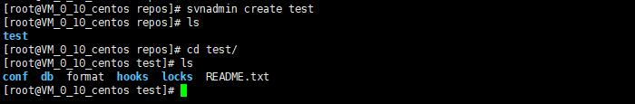

SVN服务器搭建配置教程
本篇讲解如何在 Linux 服务器 CentOS 7 搭建 SVN 服务端，创建 SVN 仓库项目，添加项目成员以及配置用户权限。
我们将使用 svnserve 提供 svn 服务（另外还有 apache搭建SVN 方式）使用svnadmin创建仓库；
如果你闲搭建自己的SVN服务端以及配置比较麻烦，推荐你使用 SVNBucket，提供了可视化的操作界面，所有操作都变得非常简单
服务器上安装 Subversion
首先我们要安装 SVN 的服务端，Apache Subversion 提供了服务端和客户端。
如果你还没安装好 Subversion 请查看 SVN服务端安装教程
创建 SVN 仓库
为确保你已正确安装好 SVN ，请在命令行输入 svnadmin help，如果看到如下内容，说明是没问题的
1 | # svnadmin help |
svnadmin是一个服务端的 SVN 管理工具，我们可以用它来创建仓库。
我们的仓库通常都会有很多个，所以我们创建一个目录来存放，假设我以/root/repos/作为我的仓库父目录，执行下面的命令：
1 | cd /root |
接下来我们创建一个仓库test
1 | # 先进去repos目录 |
输出如下，表示创建成功，

几个关键目录介绍下conf目录是存放配置文件的，配置用户权限，用户账号密码，svnserve配置都在这里配置。db这里存放我们平常提交的数据文件，文件内容都是经过处理的，看不懂里面的内容hooks这里是存放钩子配置的，暂时不用管这里
我们的重点是在conf目录，里面几个配置文件如下：authz 是权限配置文件，用来配置用户什么路径有读写权限hooks-env.tmpl 是钩子环境变量配置文件的模版，我们暂时用不到，可以忽略passwd 用来配置用户的帐号密码svnserve.conf 是subversion的总配置
现在我们什么配置都不用修改先，我们先启动 svn 服务：
1 | # 启动svn服务，-d 表示在后台运行，-r 表示仓库根目录 |
如果没报错，说明就启动成功了。
这时候我们就可以使用 SVN 客户端来检出仓库了。如果你还不会使用 SVN 客户端，可以查看下 SVN使用教程
你会发现任何人都可以检出代码，但是无法提交代码，这是因为 svn 仓库默认就是未登录用户有读取权限。
接下来我们修改配置，限制只有登录用户才能检出代码，不然太危险了。
打开test/conf/svnserve.conf 文件，替换内容如下；
1 | [general] |
注意，这个文件里面有非常多的注释内容，我上面这个配置内容是简化后的，我们直接把原来的全部删除，替换为我们这个就行了。
保存配置后，不需要重启服务器，我们重新checkout下，这时候就会弹出登录界面了，说明配置生效了。
但是我们还没有用户名密码，接下来我们设置下用户名和密码。
打开test/conf/passwd文件，我们增加一个用户名hello，密码123456，最后内容如下：
1 | [users] |
这时候我们直接去 checkout 会提示没有权限Error Authorization failed
这是因为我们配置了authz-db = authz，这个表示用户的权限需要读取这个配置文件去判断。
如果我们去掉这个配置，则登录用户对整个仓库都有读写权限。
接下来我们给 hello 用户配置路径权限，打开test/conf/authz文件，写入如下内容：
1 | # 这是一个权限配置文件 |
把配置文件保存好，这样我们的hello用户就有了根目录/的读权限，并且有了/server/src的读写权限了。
另外我们还配置了几个分组，不过那些用户都是假的，需要在passwd文件里先配置这些用户才能使用，这里只是给你演示下如何配置分组
好了，完整的 SVN 服务端搭建和配置就完成了，日常工作中，如果项目比较多、用户多，会需要经常修改配置文件，要多注意安全，不然容易导致仓库访问不到。
你也可以选择使用 SVNBucket， 提供了可视化的配置界面，用户创建、管理，权限配置都是直接在web端操作的，方便安全。